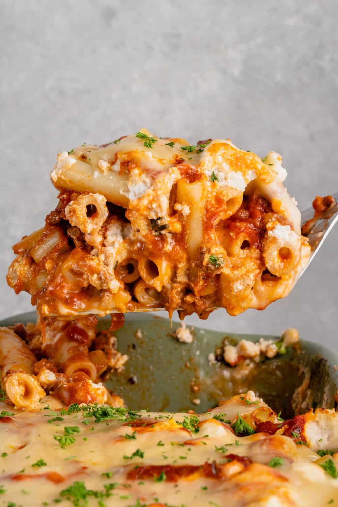

Emily's Ziti

Emily's Classic Ziti with a Vegan Twist
A classic dish best enjoyed with friends and family
Makes four servings
Ingredients
- Ziti Noodles 16oz
- Impossible Sausage 4pk
- 20oz Marinara
- 7oz Vegan Mozzarella
Instructions
- Preheat oven to 400 degrees
- Begin boiling a pot of water for pasta
- Begin heating pan for sausage
- Remove sausage from casing
- Begin crumbling and cooking sausage in pan for 16 minutes until brown
- While sausage is cooking, add pasta to boiling water
- After sausage is finished cooking, add marinara to pan and simmer
- After cooking, remove pasta from water and set aside
- Combine pasta and meat sauce
- Lightly grease a pan and add 1/2 of pasta with sauce
- Sprinkle 1/3 of your vegan cheese across the pasta
- Layer remaining pasta and sprinkle with the rest of your cheese
- Bake for 20 minutes
- After baking for 20 minutes, remove from oven and let cool before serving